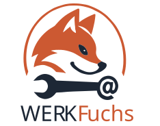

Inventar erfassen
Speichere Werkzeuge, Material, Maschinen, Boxen und Kleinteile mit Name, Kategorie, Lagerort, Menge und Einheit.

Deine Werkstatt. Dein Inventar. Dein Team.
WerkFuchs Pro hilft dir, Werkzeuge, Material, Boxen und Kleinteile im Blick zu behalten – damit du schneller findest, was du brauchst, und rechtzeitig merkst, was nachgekauft werden muss.
Installiere WerkFuchs Pro und lege deine eigene Werkstatt an.
WerkFuchs Pro ist eine App für alle, die in Werkstatt, Keller, Garage oder Lager endlich den Überblick behalten möchten. Du kannst Werkzeuge, Maschinen, Schrauben, Dübel, Boxen und Verbrauchsmaterial digital erfassen und später gezielt wiederfinden.
Statt lange zu suchen, speicherst du Gegenstände mit Kategorie, Lagerort, Menge, Foto und QR-Code. So weißt du schneller, was vorhanden ist, wo es liegt und was auf die Einkaufsliste gehört.
Speichere Werkzeuge, Material, Maschinen, Boxen und Kleinteile mit Name, Kategorie, Lagerort, Menge und Einheit.
Finde Einträge schnell über Suche, Kategorien und Lagerorte – besonders praktisch bei vielen Boxen und Kleinteilen.
Erzeuge QR-Codes und drucke Etiketten als PDF, damit Boxen und Artikel direkt mit der App verknüpft sind.
Ergänze Artikelbilder, damit du schneller erkennst, welcher Gegenstand oder welche Box gemeint ist.
Notiere, was fehlt oder nachgekauft werden muss, und hake erledigte Einträge ab.
Lade weitere Personen in einen Workshop ein und verwalte gemeinsam Inventar und Material.
Teste KI-Vorschläge, um Gegenstände auf Fotos schneller zu benennen und einzuordnen.
Nutze eigene Kategorien für deine Werkstatt – zum Beispiel Schrauben, Dübel, Werkzeug, Elektrik oder Maschinen.
WerkFuchs Pro wird laufend verbessert. Rückmeldungen aus der Praxis fließen direkt in die Weiterentwicklung ein.
WerkFuchs Pro richtet sich an Heimwerkerinnen und Heimwerker, Bastler, Familien, Vereine, Hausmeisterdienste und kleine Werkstätten, die ihre Dinge besser organisieren möchten – ohne kompliziertes Warenwirtschaftssystem.